林国际美好社会基金会
Thank you for visiting our website!
~ We look forward to getting to know you ~
We would like to respectfully inform everyone that Lim International Foundation for a Better Society, the Kind-hearted Adults Group, and kind-hearted teachers have jointly established White Seed International Preschool, accepting kindergarten students aged 2 years old, in order to become quality people in all aspects, focusing on creating a good society, giving opportunities to children who lack readiness in education to have a good education. The Kind-hearted Adults Group therefore jointly established Lim International Foundation for a Better Society to find funds for establishing White Seed International Preschool, by asking for support from kind-hearted adults around the world who have financial readiness and faith, according to the purpose of supporting, so that children around the world will have the opportunity to study and be quality individuals.
1. Love and respect our parents.
2. Must love our family and be united.
3. Must maintain the reputation of the family lineage firmly and permanently.
4. Must love the country and join hearts to make it progress with dignity.
These things will create a good conscience.
(Not violating laws and morality)
Thank you, everyone.

A modern VIP international preschool environment designed for 2-year-old children with safe classrooms, creative learning spaces, nap rooms, indoor and outdoor play areas, and multicultural experiences.
White Seed International Preschool welcomes all families.
Our school focuses on learning through creativity,
kindness, languages, music, family values,
social development, and cultural exchange.
For students who wish to apply for a full scholarship,
our school accepts up to 100 students per year
from around the world.
For students who use their own financial support,
our school also accepts up to 100 students per year
from around the world.
We are truly grateful for your interest in
and trust in our school.
(No External Donations Accepted)
Thank you, everyone.
Lim International Foundation for a Better Society is an organization committed to creating and developing a better society, because we believe that a good and strong society is the most important foundation that must come first before leading to stable and long-lasting prosperity.
Education will stay with students, increasing capability and good consciousness for students to serve as a guideline for living a quality life. We focus on supporting education and the health/well-being of children and youth (White Seeds Inter) to sow the seeds of the future for global society.
Key Focus Areas:
1. Knowing our duties.
2. Knowing our rights and others.
3. Not doing wrong by violating the law.
4. Not against morality.
5. Focusing on the health of students.
6. Focusing on mental health and emotions of students.
7. Focusing on having systematic discipline.
8. Focusing on letting students know human nature and psychology.
9. Developing society to be a good person of society.
Curricular Highlights:
• English - Chinese - Japanese Languages
• Computer, Technology, Robots
Our Faculty:
Experienced, kind-hearted teachers and robots being assistants on teaching students in our school.


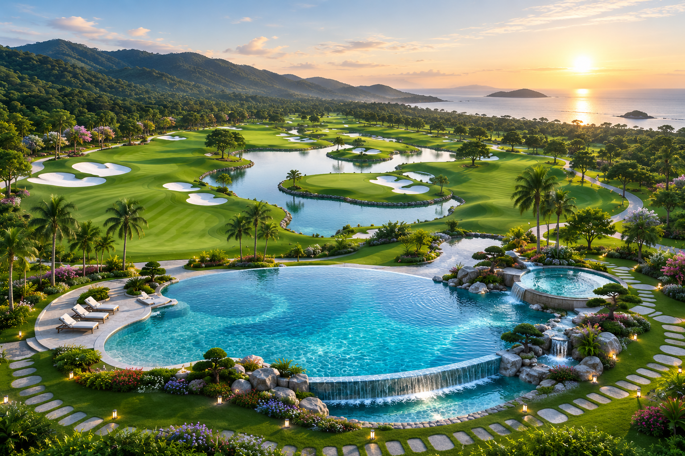


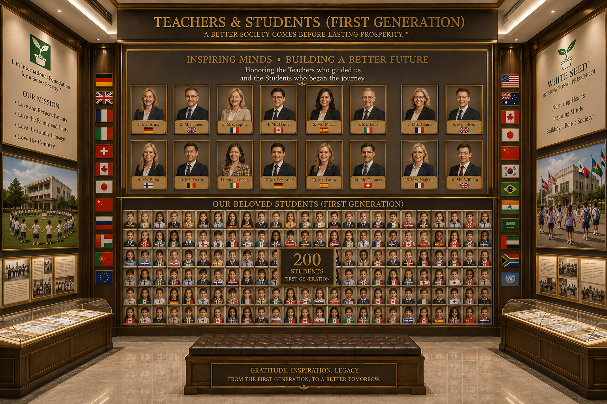

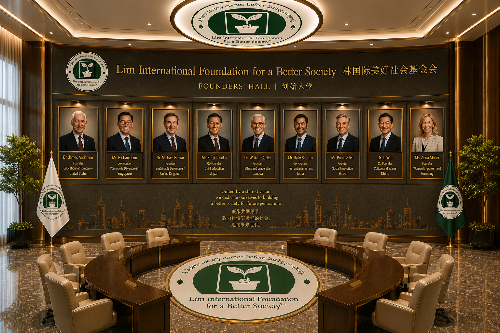
Lim International Foundation for a Better Society™
White Seed™ International Preschool
Founded by a total of nine founders and co-founders
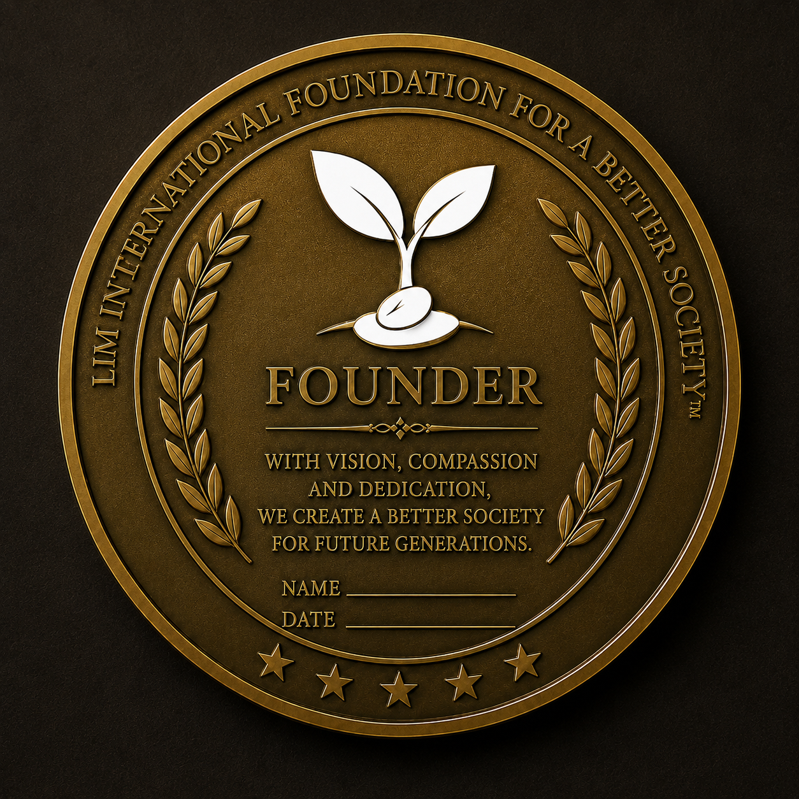
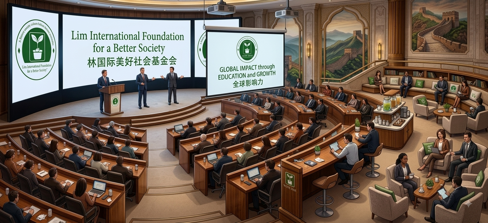


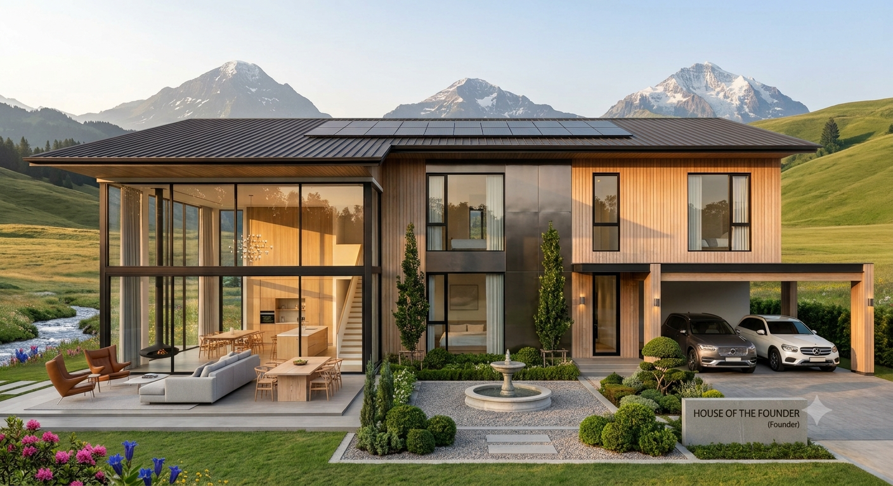

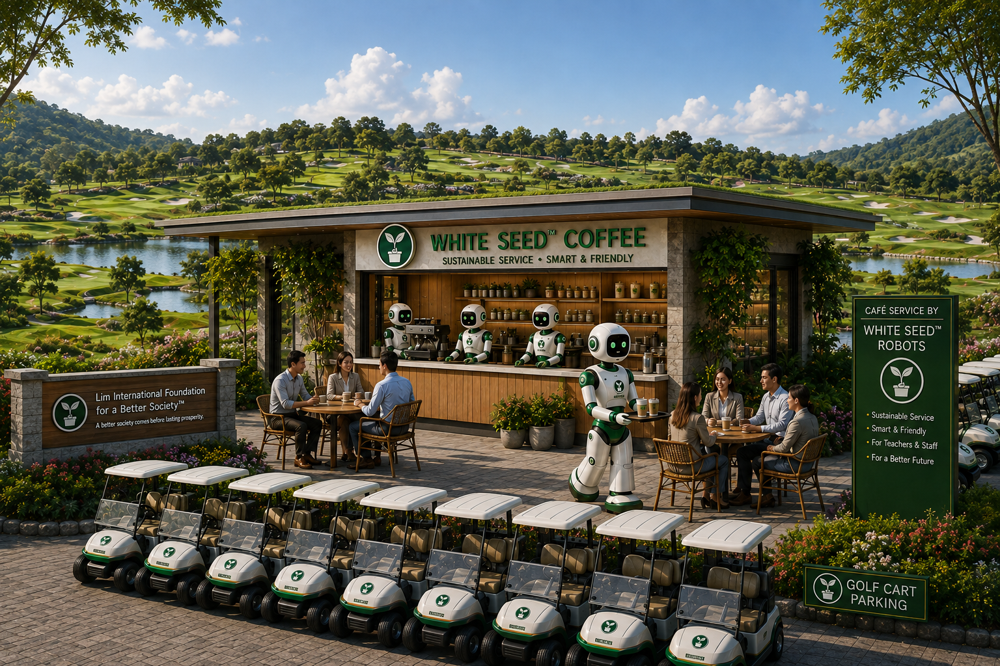
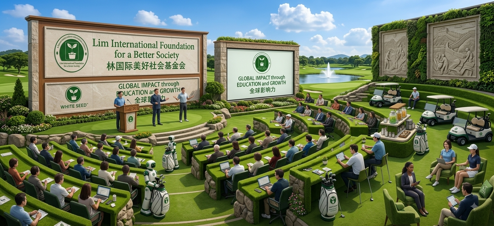
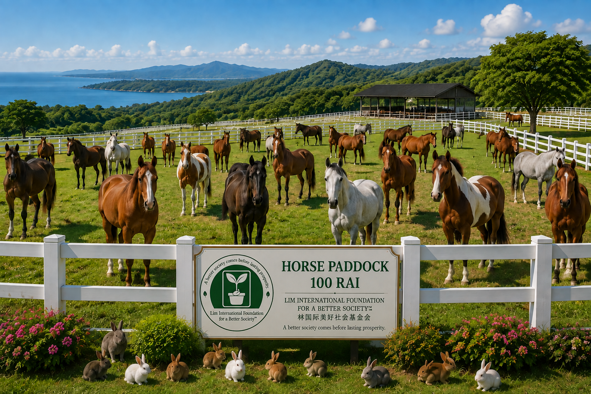
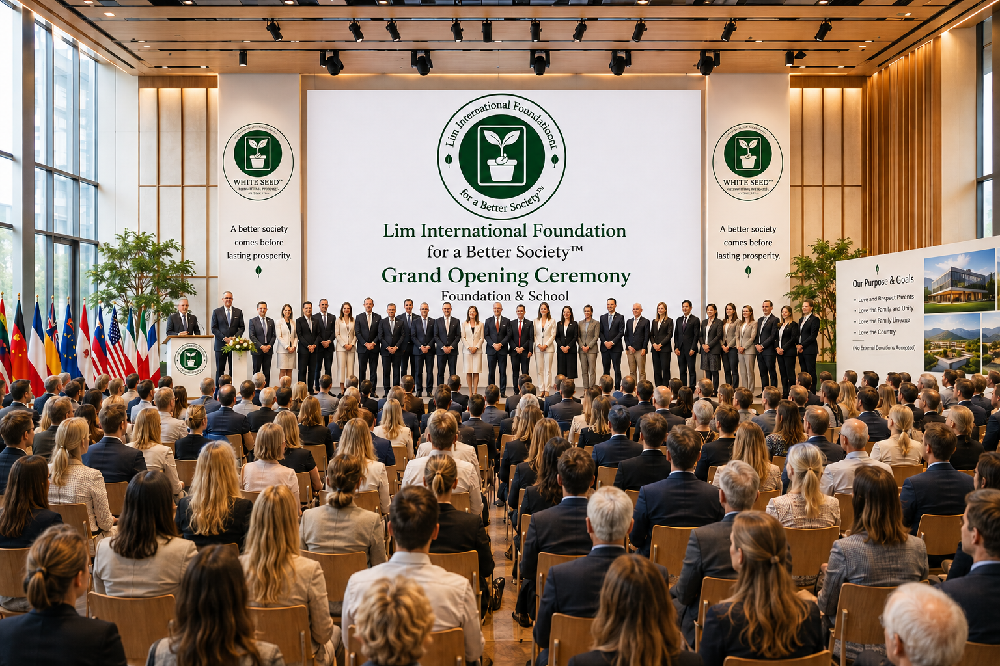
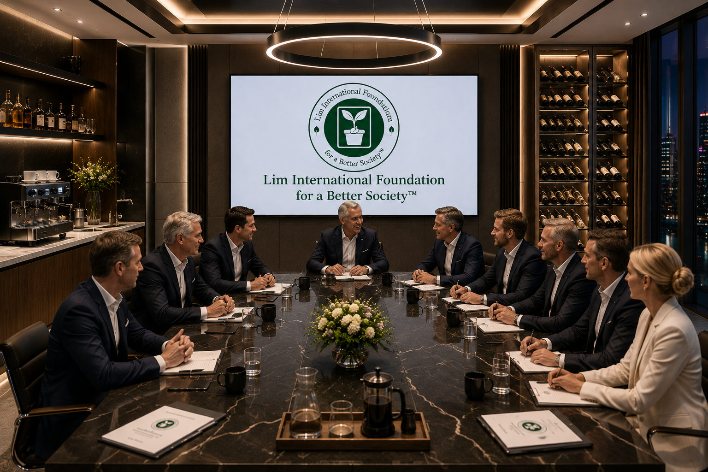
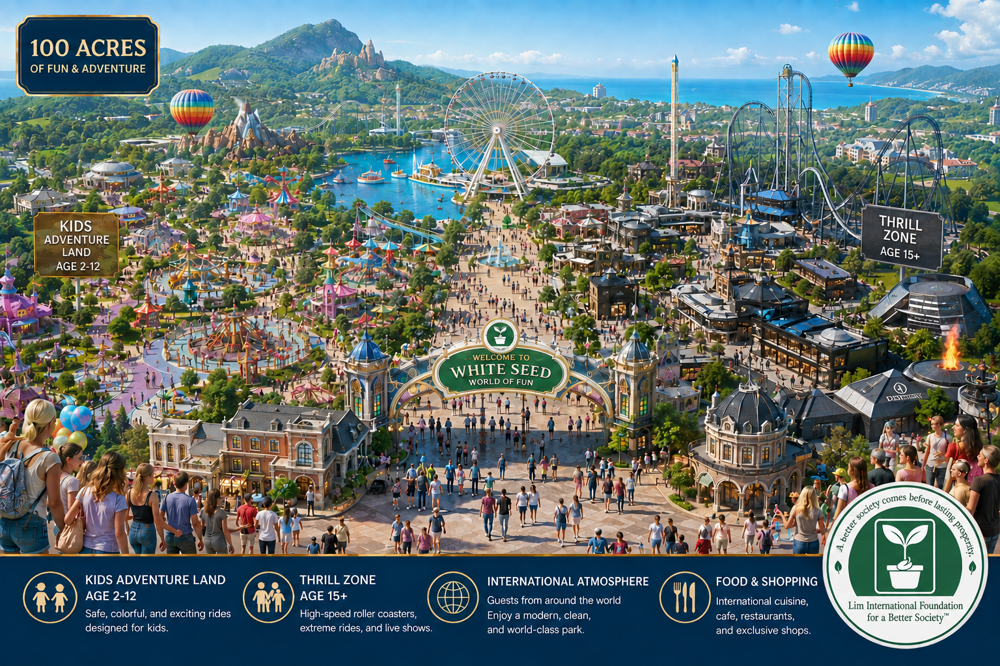

We would like to cordially invite all kind-hearted adults to join us.
1. We would like to respectfully inform everyone that our group, the Lim International Foundation for a Better Society and White Seed International Preschool, is founded by seniors aged 60 and above. Each of us has seen and experienced different aspects of life, yet we share a similar conviction: today's global society has fallen into too much failure to be repaired through simple fixes. It requires a fresh start, and the new generation must take up the torch to carry it forward.
1.1 The new generation kids must focus on fixing society itself. Society is the solid foundation of every home and nation—if society is not strong, progress cannot endure in a stable or permanent way. A strong society is therefore an absolute necessity, and we firmly believe that a good society must come before prosperity. This is why we established the Lim International Foundation for a Better Society and White Seed International Preschool.
1.2 We have therefore gathered together, donating a portion of our personal assets to establish and co-manage the Lim International Foundation for a Better Society and White Seed International Preschool. Our purpose is to provide the new generation with the opportunity to learn in a high-quality school—one that focuses on societal values alongside well-rounded knowledge and capability, nurturing them into a new quality seed for the future.
1.3 As for us, the adults who sacrifice our wealth and time, we too will find a fulfilling purpose—a welcoming place to live and lead happy, meaningful lives. We stand ready to walk alongside these children, creating a better society for our world, together.
1.4 We, the nine founders, will jointly manage the Lim International Foundation for a Better Society and White Seed International Preschool for an initial term of five years. After this five-year period, a executive team will be selected—comprising both current founders among the nine and newly appointed executives—maintaining a total of no more than nine members, as originally established.
1.5 Details regarding executive authority and rights can be viewed on the official websites of the Lim International Foundation for a Better Society (https://paisanlimai.github.io/Lim-International-Foundation-for-a-Better-Society/) and White Seed International Preschool (https://paisanlimai.github.io/white-seed-international-preschool/). For further inquiries, please feel free to contact us via email at LimInternationalFoundation@proton.me or whiteseedinternationalpreschool@proton.me.
We warmly invite kind-hearted adults around the world who share our vision to join us in doing good—empowering the next generation to fulfill their potential as good citizens and build a better society for our world together.
(No External Donations Accepted)
(Not violating laws and morality)
Thank you to everyone who contributed constructively.
1. We would like to respectfully inform everyone that the Lim International Foundation for a Better Society and White Seed International Preschool are made possible by the Kind-hearted Adults Group, who work together to drive this project to its goal. This requires substantial financial resources and the utmost sacrifice, with genuine and constructive intentions to see good things happen in this world.
1.1 Due to reaching the age of 60 and entering the senior stage of life, it is essential to maintain good health and well-being. Living an appropriate lifestyle requires being in a suitable environment and maintaining a good quality of life.
1.2 Entitled to good rights such as:
- Honorary museum as founder
- Suitable accommodation
- Exercise appropriate to the body
- Appropriate medical treatment
- Free expenses for all items at Lim International Foundation for a Better Society and White Seed International Preschool
- Personal expenses as appropriate
- (Founder’s medal)
Thank you to everyone who contributed constructively.
Email: LimInternationalFoundation@proton.me
Thailand Branch & International Branch
Further location details will be announced later.
We are looking for kind, caring, and creative teachers to join our international preschool community.
Qualifications:
• Love and care for young children
• Positive attitude and strong teamwork skills
• Ability to communicate in English and Thai;
knowledge of Japanese or Chinese is a plus
• Teachers with 20 years or more of educational experience
are especially welcome
• Preferred age range: 55–75 years old
• Experience in early childhood education is an advantage
• International teachers are welcome
Our school focuses on:
• Creative and joyful learning
• Family values and social development
• Music, culture, and language learning
• A safe and multicultural environment
Thailand Branch & International Branch
Further location details will be announced later.
Email:
LimInternationalFoundation@proton.me